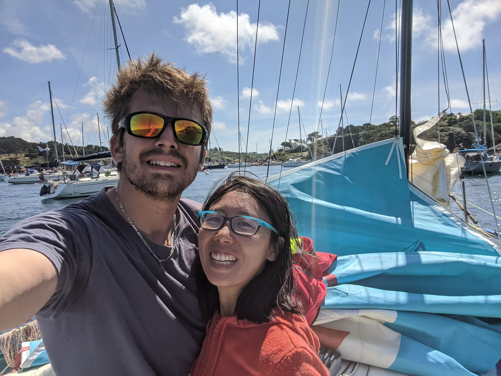
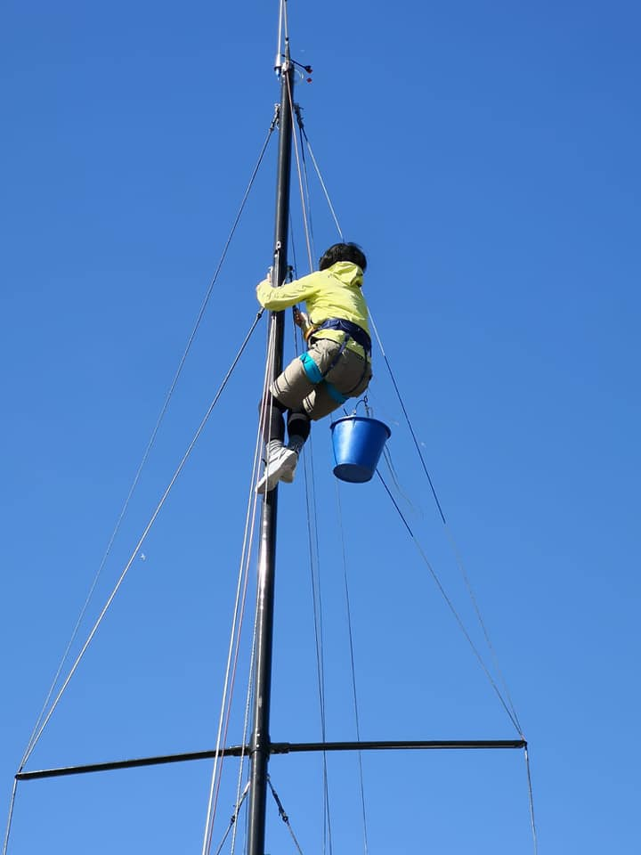

L'équipage
Rémy Hubscher
Rémy commence la voile croisière en arrivant en Bretagne en 2015. Avec l'école de voile Les Glénans d'une part et via VogAvecMoi d'autre part.
Très rapidement, devant son energie, plusieurs skippers lui proposent de faire la mini pour continuer d'en apprendre un maximum sur la voile.
Était-ce une bonne idée ? L'histoire nous le dira. Aujourd'hui le bateau est là et après de nombreuses heures de bricolage, il s'apprête à faire sa première course.
Séverine Beyer
Séverine commence la voile en même temps que Rémy, un peu pour voir au début, ça devient rapidement une réele passion, navigatrice dans l'âme, Séverine a un poste clé dans le projet mini.
Séverine est une partenaire redoutable à terre, en entrainement mais également lors des courses en double.